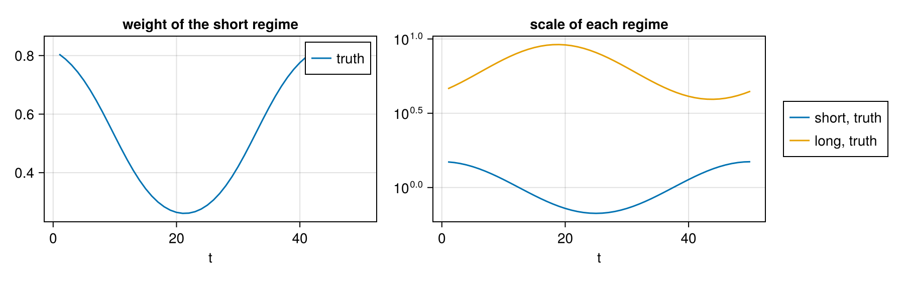
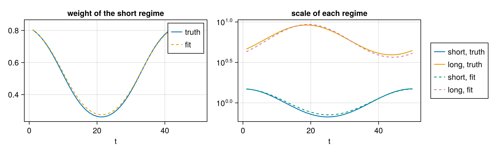

Seasonal mixture
We observe independent real observations $Y_1, \dots, Y_N$. Observation $n$ falls at period index $t_n \in \{1, \dots, T\}$ of a cycle of $T$ steps (n2t[n], see the data layout). Each comes from one of $K$ components, drawn with probabilities that vary along the cycle: with $Z_n \in \{1, \dots, K\}$ the unobserved component of observation $n$,
\[\mathbb{P}(Z_n = k) = \alpha_k(t_n), \qquad Y_n \mid Z_n = k \ \sim\ f_k\big(\,\cdot\,;\ \theta_k(t_n)\big),\]
so that $Y_n$ has density $y \mapsto \sum_{k=1}^K \alpha_k(t_n)\, f_k\big(y;\ \theta_k(t_n)\big)$, where
- $\alpha_k(t) \geq 0$ is the weight of component $k$ at period index $t$, with $\sum_{k=1}^K \alpha_k(t) = 1$;
- $f_k(\,\cdot\,; \theta)$ is the density of component $k$, a law of a given family with parameter $\theta$; here the exponential law of scale $\theta$, $f_k(y; \theta) = e^{-y/\theta}/\theta$ for $y \geq 0$;
- $\theta_k(t)$ is the parameter of component $k$ at period index $t$.
The weights and the parameters are trigonometric polynomials of degree $d$ (any other basis can replace them),
\[P(t) = c_0 + \sum_{\ell=1}^{d} \left( c_{2\ell-1} \cos\frac{2\pi \ell t}{T} + c_{2\ell} \sin\frac{2\pi \ell t}{T} \right),\]
pushed through a link: a softmax for the weights, with one polynomial $P^\alpha_k$ for each $1 \le k < K$ and component $K$ as the reference, $P^\alpha_K = 0$; and a log for the scales, one polynomial $P^\theta_k$ per component:
\[\alpha_k(t) = \frac{e^{P^\alpha_k(t)}}{\sum_{l=1}^{K} e^{P^\alpha_l(t)}}, \qquad \theta_k(t) = \exp\big(P^\theta_k(t)\big), \qquad k \in \{1, \dots, K\}.\]
As a toy example, take waiting times that come from one of two regimes, short or long. How often each regime occurs, and how long its waits are, both change along a cycle of 50 steps.
using SmoothPeriodicStatsModelsusing Optimization, SimpleNonlinearSolve # loads the fitting routinesusing OptimizationOptimJL # the optimization algorithm, LBFGSusing Distributions, Randomusing CairoMakiesolver = LBFGS() # every fit below takes its optimization algorithm explicitlyLBFGS{Nothing, LineSearches.InitialStatic{Float64}, LineSearches.HagerZhang{Float64, Base.RefValue{Bool}}, Returns{Nothing}}(10, LineSearches.InitialStatic{Float64}(1.0, false), LineSearches.HagerZhang{Float64, Base.RefValue{Bool}}(0.1, 0.9, Inf, 5.0, 1.0e-6, 0.6666666666666666, 50, 0.1, 0, Base.RefValue{Bool}(false), nothing, false), nothing, Returns{Nothing}(nothing), Optim.Flat(), true)A model with known coefficients
SmoothSeasonalMixture(Exponential, K, d, T; init) is that mixture with exponential components. init is required and gives each component a scale, constant over the cycle: here $\theta_1 = 1$ and $\theta_2 = 6$. The constant term of $P^\theta_k$ is then $\log \theta_k$, its harmonics are zero, and the weights are equal. Starting values gives the rule for every family.
The coefficients sit in parameters(m): parameters(m).α holds those of $P^\alpha_1, \dots, P^\alpha_{K-1}$, one column per component but the reference $K$, and component_coefs(m, k) those of $P^\theta_k$, $(c_0, c_1, c_2)$.
T = 50truth = SmoothSeasonalMixture(Exponential, 2, 1, T; init=[1.0, 6.0])component_coefs(truth, 2)3-element view(::Vector{Float64}, 7:9) with eltype Float64:
1.791759469228055
0.0
0.0The truth then sets the weights and the harmonics of the scales:
parameters(truth).α .= [0.3, 1.2, -0.6]component_coefs(truth, 1)[2:3] .= [0.4, 0.0]component_coefs(truth, 2)[2:3] .= [-0.3, 0.3]truthSmoothSeasonalMixture of 2 Distributions.Exponential over a period of 50, 9 coefficients
weights, softmax over the first 1:
ParamSpec with 3 coefficients:
α ConstantBasis() + FourierBasis(50, 1) => IdentityLink() [1:3]
component 1, Distributions.Exponential, coefficients 1:3:
ParamSpec with 3 coefficients:
θ ConstantBasis() + FourierBasis(50, 1) => LogLink() [1:3]
component 2, Distributions.Exponential, coefficients 4:6:
ParamSpec with 3 coefficients:
θ ConstantBasis() + FourierBasis(50, 1) => LogLink() [1:3]
mixture_weights(m) is the K × T matrix of weights, and curve(m, :θ) the K × T matrix of scales (θ is the name of Exponential's parameter).
function plot_mixture(models, labels) fig = Figure(size=(900, 280)) ax1 = Axis(fig[1, 1], title="weight of the short regime", xlabel="t") ax2 = Axis(fig[1, 2], title="scale of each regime", xlabel="t", yscale=log10) for (m, label, style) in zip(models, labels, (:solid, :dash)) lines!(ax1, 1:T, mixture_weights(m)[1, :]; label, linestyle=style) θ = curve(m, :θ) lines!(ax2, 1:T, θ[1, :]; label="short, " * label, linestyle=style) lines!(ax2, 1:T, θ[2, :]; label="long, " * label, linestyle=style) end axislegend(ax1) Legend(fig[1, 3], ax2) return figendplot_mixture([truth], ["truth"])
Simulate and fit
rand(m, N) draws N independent observations, observation n at period index n_to_t(N, T)[n]. m(t) is the MixtureModel at one period index.
Random.seed!(2)N = 20_000y = rand(truth, N)truth(10)MixtureModel distribution
Components:
[1] Exponential(1.1315708473095305)
[2] Exponential(7.274472674343654)
Prior:
Categorical([0.5250256917721982, 0.4749743082278019])fit_mle runs the EM algorithm from the coefficients of the model it is given. The starting components must differ (otherwise the EM will not be able to distinguish the two identical states), here by their scales: 0.5 for the short waits, 3 for the long ones. Their curves start flat and the weights equal.
m0 = SmoothSeasonalMixture(Exponential, 2, 1, T; init=[0.5, 3.0])m, history = fit_mle(m0, y; solver, maxiter=1000)historyFitHistory: converged in 117 iterations, loglikelihood -42032.4371plot_mixture([truth, m], ["truth", "fit"])
The fitted coefficients are parameters(m).α for the weights and component_coefs(m, k) for component k. The long regime:
(fit=round.(component_coefs(m, 2); digits=2), truth=round.(component_coefs(truth, 2); digits=2))(fit = [1.77, -0.35, 0.31], truth = [1.79, -0.3, 0.3])Components of different families
Each component carries its own family and degree. A list of distribution => degree pairs builds such a mixture; for a family with several parameters, init takes a NamedTuple. Here the long regime is modelled by a Gamma law, which contains the exponential as the case of shape
m_gamma = SmoothSeasonalMixture([Exponential => 1, Gamma => 1], T; init=[0.5, (α=1.5, θ=3.0)])f_gamma = fit(SeasonalFit, m_gamma, y; solver, maxiter=1000)f_exp = fit(SeasonalFit, m0, y; solver, maxiter=1000)[(model="Exponential + Exponential", dof=dof(f_exp), bic=round(bic(f_exp); digits=1)), (model="Exponential + Gamma", dof=dof(f_gamma), bic=round(bic(f_gamma); digits=1))]2-element Vector{@NamedTuple{model::String, dof::Int64, bic::Float64}}:
(model = "Exponential + Exponential", dof = 9, bic = 84154.0)
(model = "Exponential + Gamma", dof = 12, bic = 84179.0)The data are a mixture of exponentials, and the BIC prefers the model without the extra shape parameters. components(m)[k][t] is component k at period index t; here is the range of the fitted Gamma shape over the cycle:
extrema(shape.(components(f_gamma.model)[2]))(1.0085887023270095, 1.4874817565134837)seasonal_family lists the families available as components (Exponential, Rayleigh, Gamma, Weibull, Normal, LogNormal, Bernoulli, Poisson); its docstring shows how to add one.
This page was generated using Literate.jl.